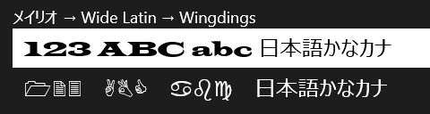
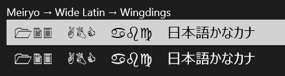

フォントをコードから設定するときの注意点
Introduction
コードから FontFamily を設定するときは、 英語のフォント名を使いましょう。
ユーザーに提示するフォント名と、 FontFamily の生成に使うフォント名は、 面倒ですが別々に管理しましょう。

Building the Sample
Visual Studio 2012 Express for Windows 8 でビルドできます。
Description
何が問題なのか?
日本語フォントとWingdingsのようなシンボル系フォントを切り替えて使うときに問題になります。
TextBox では問題が出ます。 TextBlock は問題ありません。 その他のコントロールは調査していません。
現象としては、 TextBox のフォント指定を、 日本語で始まるフォント名(例:「メイリオ」)にした後で、 シンボル系フォントを指定しても正しく表示されません。
対処としては、 英語のフォント名(例:「Meiryo」)で指定することです。
日本語フォント名 → シンボル系フォント
日本語フォント名、 正確にはフォント名の先頭が日本語の場合です(先頭が半角英数字なら、後に日本語があってもOK)。
一度おかしくなると、 別のフォントを指定してもダメです。 例えば、
メイリオ → Wide Latin → Wingdings
とコードからフォントを変えてみましょう。
textbox1.FontFamily = new FontFamily("メイリオ");
await Task.Yield();
textbox1.FontFamily = new FontFamily("Wide Latin"); // 英字フォントの指定はOK
await Task.Yield();
textbox1.FontFamily = new FontFamily("Wingdings"); // シンボル系フォントの指定はNG (追加入力分には反映される)
await Task.Yield();
//textbox1.Text += " "; //コードから文字列を変更してやると、正しいフォントで表示される!
textbox1.FontFamily = new FontFamily("メイリオ"); await Task.Yield(); textbox1.FontFamily = new FontFamily("Wide Latin"); // 英字フォントの指定はOK await Task.Yield(); textbox1.FontFamily = new FontFamily("Wingdings"); // シンボル系フォントの指定はNG (追加入力分には反映される) await Task.Yield(); //textbox1.Text += " "; //コードから文字列を変更してやると、正しいフォントで表示される!
実行してみると、TextBox (上段) では、一見まったく Wingdings の指定が無視されたように見えます。
なお、 下段は TextBlock で、 これは想定通りに英数字が Wingdings で表示されています。

ところが、文字列の後ろに半角英数字を入力してみると、Wingdings で表示されます。 ところがところが、 Wide Latin で表示されている部分(例えば「ABC」の部分)をコピーして文字列の後ろに張り付けてみると、 Wide Latin で表示されてしまいます。 なかなか不思議な挙動をしてくれます。
英語フォント名 → シンボル系フォント
「メイリオ」には英語名「Meiryo」もあるので、そっちで試してみましょう。
Meiryo → Wide Latin → Wingdings
とコードからフォントを変えてみます。
// 英語の名称(例:Meiryo)を使えば大丈夫
textbox2.FontFamily = new FontFamily("Meiryo");
await Task.Yield();
textbox2.FontFamily = new FontFamily("Wide Latin");
await Task.Yield();
textbox2.FontFamily = new FontFamily("Wingdings");
await Task.Yield();
// 英語の名称(例:Meiryo)を使えば大丈夫 textbox2.FontFamily = new FontFamily("Meiryo"); await Task.Yield(); textbox2.FontFamily = new FontFamily("Wide Latin"); await Task.Yield(); textbox2.FontFamily = new FontFamily("Wingdings"); await Task.Yield();
実行してみると、こんどはちゃんと想定通りに英数字が Wingdings で表示されます。

まとめ
コードから FontFamily を設定するときは、英語のフォント名を使うのが無難です。 シンボル系フォントを指定する場合には、上記のような不具合が発生します。
フォントを決め打ちで設定している場合や、 コードから設定するにしてもハードコードしている場合は問題になりませんが、 ユーザーにフォントを設定させるようなときには問題になります。 かといって、ユーザーに提示するフォント名として例えば「HGSSoeiKakupoptai」などとしてはダメで、ユーザーに対しては「HGS創英角ポップ体」と日本語名を提示すべきでしょう。すなわち、ユーザーにフォント名の選択肢を提示するアプリでは、フォント名として日本語名と英語名の両方を管理する必要があります。
なお、Windows 8 に標準で搭載されているフォントの一覧(英語名)は、こちらにあります。 ⇒ Fonts supplied with Windows 8
余談
ユーザーにフォント名の選択肢を提示するアプリでは、次のようなクラスを用意しておいて、起動時にでもそのコレクションを作っておくとよいでしょう。
public class FontName
{
public string Japanese { get; internal set; }
private string _english;
public string English
{
get { return _english; }
internal set
{
if (string.Equals(_english, value))
return;
_english = value;
if (string.IsNullOrWhiteSpace(_english))
_fontFamily = null;
else
_fontFamily = new FontFamily(_english);
}
}
private FontFamily _fontFamily;
public FontFamily FontFamily
{
get { return _fontFamily; }
}
}
public class FontName { public string Japanese { get; internal set; } private string _english; public string English { get { return _english; } internal set { if (string.Equals(_english, value)) return; _english = value; if (string.IsNullOrWhiteSpace(_english)) _fontFamily = null; else _fontFamily = new FontFamily(_english); } } private FontFamily _fontFamily; public FontFamily FontFamily { get { return _fontFamily; } } }
なお、完全に余談ですが、冒頭に載せた画像ではタイトルの「ミリ」が「㍉」に合字されています。 TextBlock の標準的なスタイルと、メイリオやIPA明朝など幾つかのフォントの組み合わせでこのような合字が発生してしまうので、注意してください。
合字問題については以前ブログに書いたので、興味のある方はこちらを。 ⇒ 「[WinRT/Metro] 勝手に「ファミリー」が「ファ㍉ー」に変えられちゃうよぉ! (@@;」
Source Code Files
- MainPage.xaml/.xaml.cs - この画面とコード ビハインドだけです。
More Information
( 特に無し )